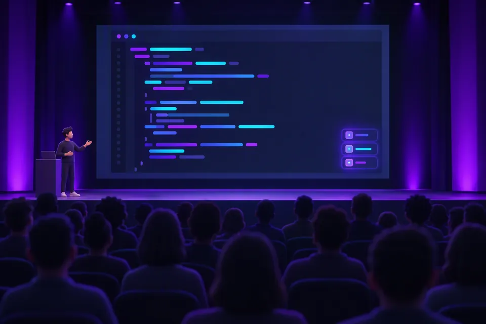
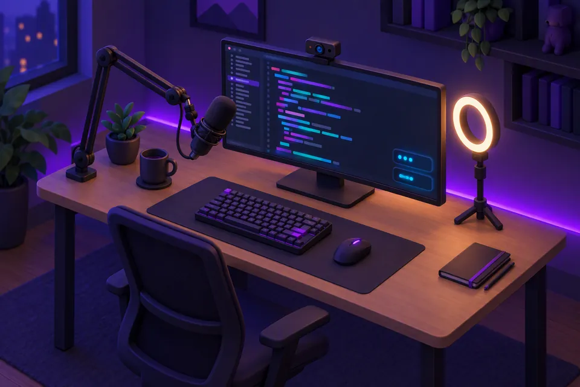
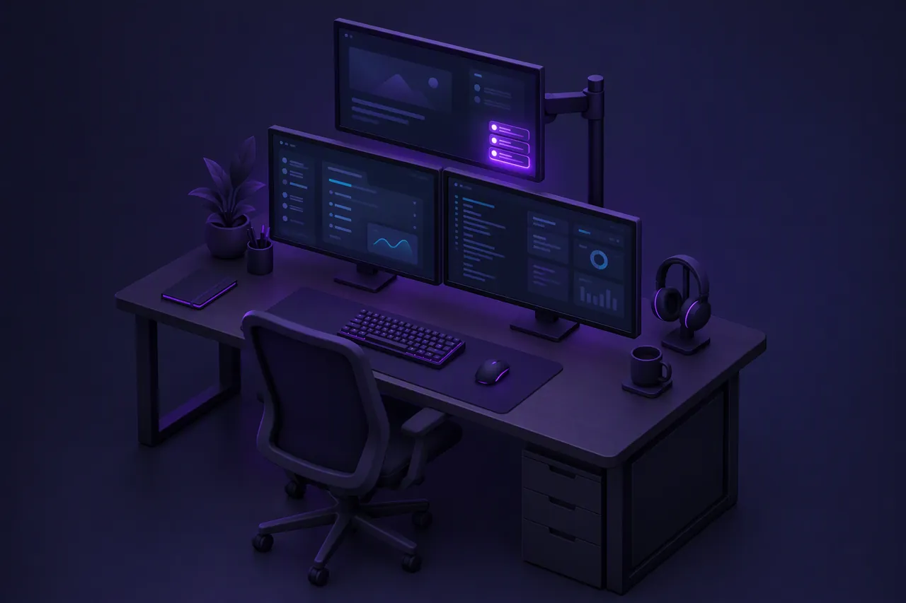

Presentations and live demos
People at the back of the room can see every shortcut you press, so nobody gets lost when you speed up.
Carnac is a keystroke and mouse-click overlay for Windows. It shows the keys and shortcuts you press, so the people watching your talk, demo or screencast can follow along. It's also a handy way to learn your own shortcuts.
winget install --id doggy8088.Carnac
Who it's for
When you move fast on the keyboard, your audience loses track. Carnac shows each key press on screen and fades it out a few seconds later.

People at the back of the room can see every shortcut you press, so nobody gets lost when you speed up.

The overlay is on screen, so your recording captures it. Viewers can pause and copy the exact keys instead of guessing.
Watch your own keystrokes. Seeing each shortcut labelled as you use it helps new combinations stick.
Features
Carnac lives in the system tray. Click the tray icon or use its right-click menu to configure, pause or silence the overlay at any time.
Recognises shortcuts from bundled keymaps and wraps their description under the keys (with a toggle to hide it). Unfinished chords flush after a 1-second timeout.
Pick any display and corner, then nudge the overlay with pixel offsets. Carnac remembers the display by device name across DPIs and monitor rearrangements.
Set font family, size and color, background color, opacity, corner radius, padding, width and fade delay—with pinned sample popups while Preferences is open.
Toggle whole key categories (letters, digits, function keys, navigation and more), list ignored keys like W,A,S,D, or show only shortcuts or modifier combos.
Enter a process filter regular expression such as Code|devenv to show only matching apps, or exclude specific apps with ^(?!ZoomIt64$).
Press Ctrl+Alt+P for silent mode before typing a password, or set your own Silent Mode and Pause hotkeys in Preferences and the tray menu.
Names keys after your active keyboard layout, localises UI and key labels (English, 繁體中文, 简体中文), and optionally shows app icons, standalone modifiers and ␣ spaces.
Sized tightly to its popup column instead of a full-screen window, so it never triggers Focus Assist, blocks auto-hide taskbars, or steals focus and clicks.
Optionally highlight left, middle and right mouse clicks with a fading ring around the pointer—each with its own color, diameter and duration.
Switch on Capture for OBS so Carnac Overlay appears in Window Capture with transparency while remaining click-through on your desktop.
Ordinary words and numbers read naturally instead of collapsing into x 2, while repeated keys past your threshold and repeated shortcuts merge into x N.
Notifies you when an elevated app hides its keys with a one-click Restart as administrator, backed by a self-healing key pipeline and rotating logs.

Multi-monitor & capture
Choose any connected display in Preferences and Carnac keeps its overlay there, even when your monitors are stacked, offset or running at different DPIs.
\\.\DISPLAY2) and re-placed live when displays changeNewKeymaps
Each keymap targets one or more apps, so a shortcut is only labelled in the app it belongs to. These ship with Carnac:
Keymaps\samples. Try it here:↑ ↑ ↓ ↓ ← → ← → B AKeymaps are small YAML files in the Keymaps folder next to Carnac.exe. Copy one, change it, and restart Carnac to load it.
process matches one or more process names without .exe (case-insensitive), joined with | such as chrome|msedge or as a YAML list. Leave it empty to match every app.name and one or more keys. Shifted characters like Ctrl++ match Ctrl+Shift+= (use Ctrl+= for unshifted).Ctrl+K,Ctrl+C. If the next key doesn't follow within a second, the first key is shown on its own.group: My App process: myapp|myapp-insiders shortcuts: - name: Command Palette keys: - Ctrl+Shift+P - name: Comment Selection keys: - Ctrl+K,Ctrl+C
Install
Pick whichever installer you prefer—or grab the portable zip with no installation required. Carnac starts in the system tray.
The Windows Package Manager installs the per-user installer on Windows 10 and 11 with no UAC prompt.
winget install --id doggy8088.Carnac
Install the carnac package from the Chocolatey community repository.
choco install carnac
Download Carnac-<version>-Setup.exe from GitHub Releases and run it for a per-user install with no UAC prompt.
Download Carnac-<version>-portable.zip from GitHub Releases, unzip it anywhere and run Carnac.exe—handy on locked-down PCs or USB sticks.
winget upgrade doggy8088.Carnac or choco upgrade carnac, and optionally turn on Check for updates on startup in Preferences for a tray notice when a new release is out.What's new
This fork keeps Carnac up to date with upstream Code52 and adds new features, polish and reliability fixes on top.
W,A,S,D, and optionally show standalone Ctrl, Alt, Shift and Win presses.Carnac Overlay selectable in OBS and XSplit Window Capture. The overlay is sized tightly to its popups instead of maximized and tracks monitors by device name across layouts and DPIs.x N after 4 repeats (10 for digits, configurable or off), repeated shortcuts merge into one popup, unfinished chords flush after 1 second, and keymaps can match multiple processes (chrome|msedge).%APPDATA%\Carnac\logs.Published to GitHub Releases, WinGet (doggy8088.Carnac) and Chocolatey (carnac).
doggy8088.Carnac) and Chocolatey (carnac), with automated GitHub Actions builds and unit tests.All releases and SHA256 checksums are available on GitHub Releases.
Carnac is free and open source. Install it in one line, or read the code on GitHub.
winget install --id doggy8088.Carnac